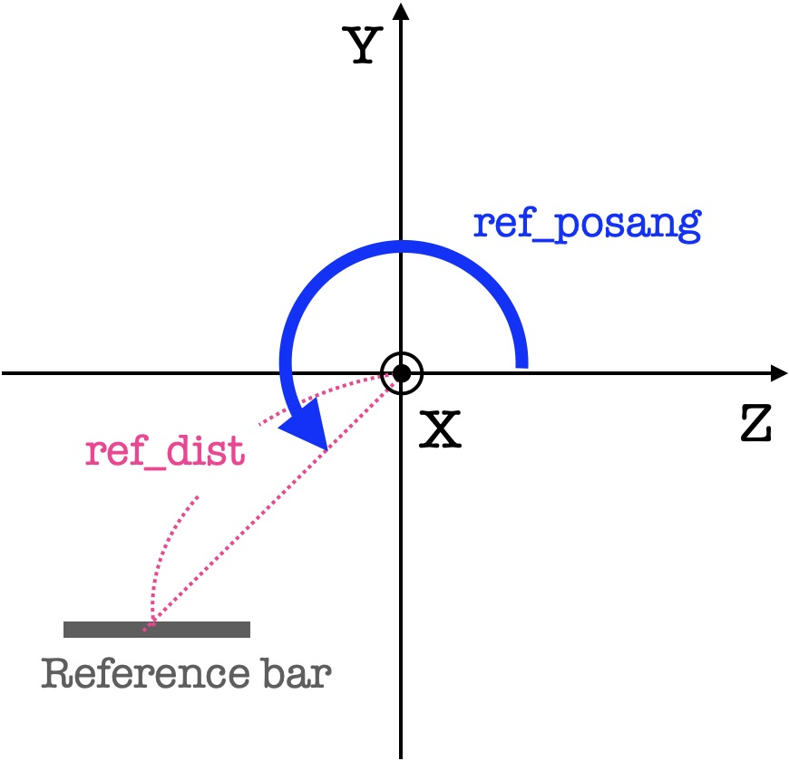
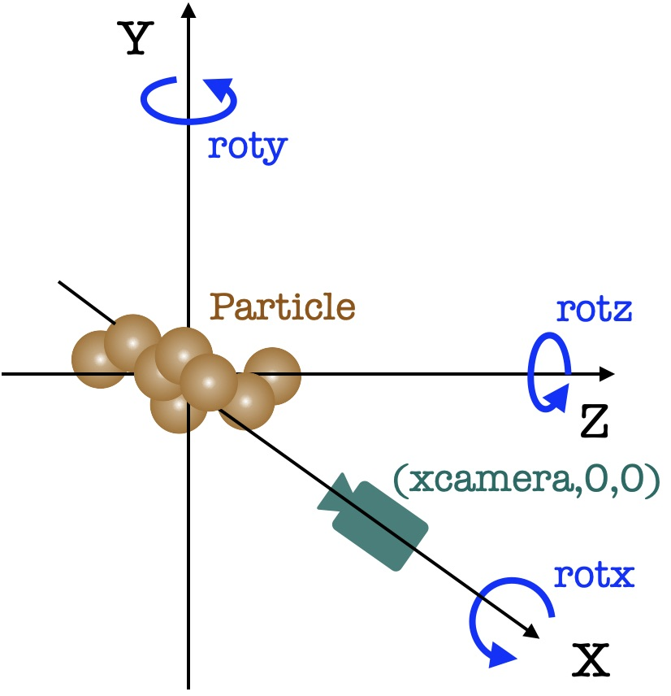

Visualization of Particles
This database already contains visualization images of particles rendered using POV-RAY. However, you may wish to change rendering parameters, such as particle and background colors, reference scale, particle orientation … etc. To do so, the aggscatpy package contains a simple function that can be used to run POV-RAY and then generate a new rendering image of particles.
Setups
Since this visulation tool relys on POV-RAY, it has to be installed in advance. Also, to run the command, a povray script (either aggregate.pov or irregular.pov) has to be placed in your working directory. These scripts are provided in aggscatvir/python/povray/.
Basic usage
First, we need to import the necessary package:
[1]:
from aggscatpy import *
We can then run the particle_rendering function:
[2]:
aggscatpy.particle_rendering(partype='CAHP',size='8',amon='100nm',ireal='1',fn='geom_demo1',path='./imgs/')
writing ... ./imgs/geom_demo1.png
partype, size, amon are the particle type, particle size, and the monomer radius. These arguments are the same as those introduced in the previous section. ireal is a realization number. Then the POV-RAY automaticlly starts to run and generate a .png image in ./imgs/ (the path to the directory was specifed in the argument when calling this function).
To check the ouput image, let’s define a simple function:
[3]:
import matplotlib
import matplotlib.pyplot as plt
def show_image(filename):
try:
im = plt.imread(filename)
plt.imshow(im)
plt.axis('off')
except FileNotFoundError:
print('Not such file. Unable to read a particle image.')
The image generated by the above command is
[4]:
show_image('./imgs/geom_demo1.png')
If you would like to make an image for irregular grains, you can type:
[5]:
aggscatpy.particle_rendering(partype='grs',size='1_6000',ireal='4',fn='geom_demo2',path='./imgs/')
show_image('./imgs/geom_demo2.png')
writing ... ./imgs/geom_demo2.png
Particle and background colors
We can change the color of particles by adding particle_color='rgb<value,value,value>' as an option. The color can be chosen from basic colors (e.g., Red, Green, Blue, Yellow, Cyan, Magenta, Clear, White) or specified with RGB mixing. RGB is a mixture of colors based on the primary colors of light, allowing for fine-tuning of the particle color. The color can be specified in the form of ‘rgb<value,value,value>’, where each value ranges from 0 to 1. For example, black is ‘rgb<0,0,0>’, and
white is ‘rgb<1,1,1>’. When all values of R, G, and B are the same, the color can also be specified simply as ‘rgb value’.
As an example, let’s make a yellowish particle:
[6]:
aggscatpy.particle_rendering(partype='CAHP',size='8',amon='100nm',ireal='1',fn='geom_demo3',path='./imgs/',\
particle_color='rgb<0.4,0.4,0.15>')
show_image('./imgs/geom_demo3.png')
writing ... ./imgs/geom_demo3.png
By default, the background color is set to transparent. To change the background color, set bgtransparent=True and set its color by adding bg_color. bgcolor can be specified in the same way as the particle color, either by RGB values or by basic colors (e.g., White, Black, Red, Green, Blue, Yellow, Cyan, Magenta, Gray). For example, to have a gray background, the command looks like this:
[7]:
aggscatpy.particle_rendering(partype='CAHP',size='8',amon='100nm',ireal='1',fn='geom_demo4',path='./imgs/',\
particle_color='rgb<0.4,0.4,0.15>', background=False, bg_color='Gray20')
show_image('./imgs/geom_demo4.png')
writing ... ./imgs/geom_demo4.png
Reference bar: position and reference scale
You modify a reference-scale bar in the image. The default reference bar length is set to the characteristic radius and the volume-equivalent radius for aggregates and irregular grains, respectively. The physical length of the bar (in units of \(\mu\mathrm{m}\)) can be directly specified by setting reference_length. The color of the reference bar can also be changed with reference_color (the color can be specified in the same way as the particle color and background color). If you
would like to have larger text fonts, you can specify its magnification rate by ref_fontsize (to make it large, the value has to be >1.0. Conversely, to make it small, the value should be <1.0).
[8]:
aggscatpy.particle_rendering(partype='CAHP',size='8',amon='100nm',ireal='1',fn='geom_demo5',path='./imgs/',\
particle_color='rgb<0.4,0.4,0.15>', background=False, bg_color='Gray20',\
ref_color='White', ref_length=0.5, ref_fontsize=1.5)
show_image('./imgs/geom_demo5.png')
writing ... ./imgs/geom_demo5.png
You can specify more detailed position of the reference bar using ref_dist and ref_posang (see also the image below). The former and latter set the distance from the origin to the center of the bar (in units of the characteristic radius for aggregates and the volume-equivalent radius for irregular grains) and angle (in degrees) measured from the \(z\) axis, respectively.

For example, if you would like to set the bar at the top of the image, you need to set ref_posang=90:
[9]:
aggscatpy.particle_rendering(partype='CAHP',size='8',amon='100nm',ireal='1',fn='geom_demo6',path='./imgs/',\
particle_color='rgb<0.4,0.4,0.15>', background=False, bg_color='Gray20',\
ref_color='White', ref_length=0.5, ref_fontsize=1.5, ref_dist=1.1,ref_posang=90)
show_image('./imgs/geom_demo6.png')
writing ... ./imgs/geom_demo6.png
You can hide the reference bar by setting reference=False:
[10]:
aggscatpy.particle_rendering(partype='CAHP',size='8',amon='100nm',ireal='1',fn='geom_demo7',path='./imgs/',\
particle_color='rgb<0.4,0.4,0.15>', background=False, bg_color='Gray20',\
reference=False)
show_image('./imgs/geom_demo7.png')
writing ... ./imgs/geom_demo7.png
Camera position and orientation of a particle
You can change the location of the camera (observer) and the orientation of a particle. The camera is fixed to the \(x\) axis of the coordinate system and you can change the distance from the origin to the camera position via xcamera (in units of the characteristic radius and the volume-equivalent radius for aggregates and irregular grains, respectively).
You can also rotate the aggregate about each axis: \(x\), \(y\), and \(z\) (Note that POV-RAY adopts the left-handed system) by using rotx, roty, and rotz, respectively (in units of degrees). These values are used to rotate the coordinate system (not a particle).

Here is an example. Let’s start with a default parameter:
[11]:
aggscatpy.particle_rendering(partype='FA11',size='32',amon='100nm',ireal='1',fn='geom_demo8',path='./imgs/')
show_image('./imgs/geom_demo8.png')
writing ... ./imgs/geom_demo8.png
By setting the xcamera less than unity, the camera will be position closer to the default position, and therefore, you will get a closeup image of the particle (the reference scale are also changed for convenience):
[12]:
aggscatpy.particle_rendering(partype='FA11',size='32',amon='100nm',ireal='1',fn='geom_demo9',path='./imgs/',\
xcamera=0.5, ref_length=0.1, ref_fontsize=1.0, ref_dist=0.2)
show_image('./imgs/geom_demo9.png')
writing ... ./imgs/geom_demo9.png
By setting rotz=45, then the aggregate can be rotated by 45 degrees.
[13]:
aggscatpy.particle_rendering(partype='FA11',size='32',amon='100nm',ireal='1',fn='geom_demo10',path='./imgs/',\
rotx=45)
show_image('./imgs/geom_demo10.png')
writing ... ./imgs/geom_demo10.png